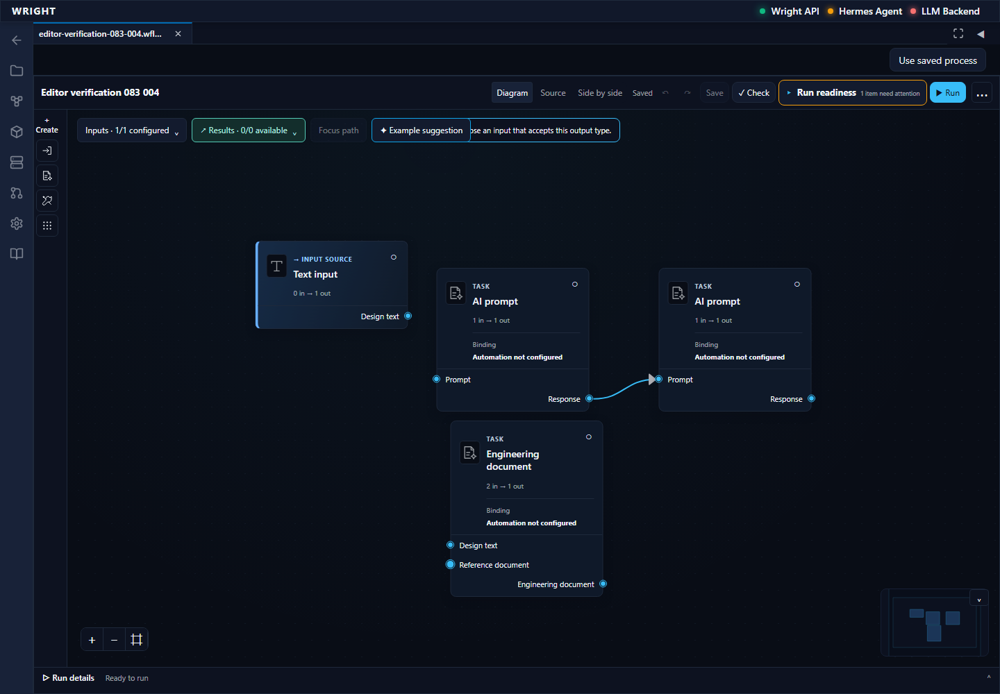
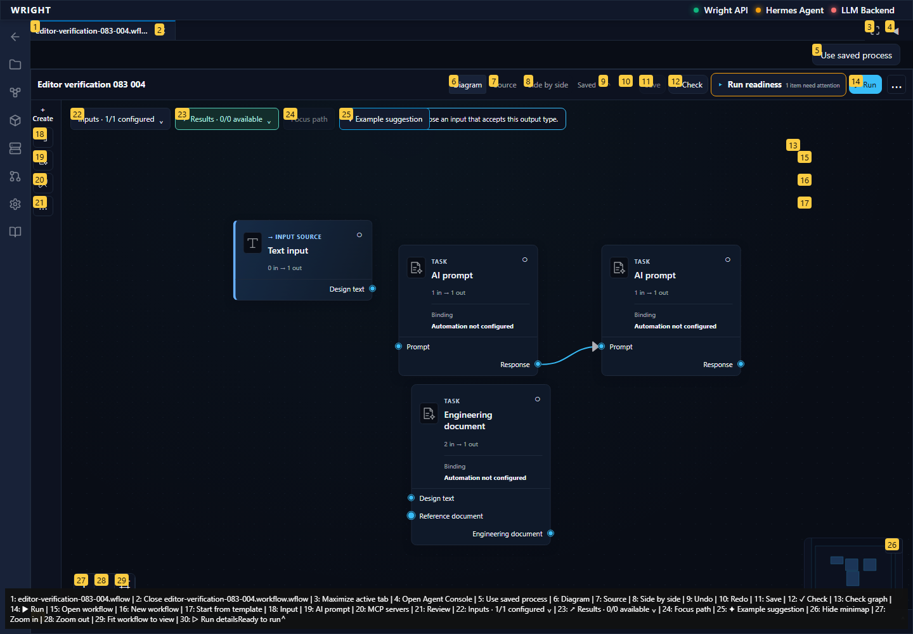
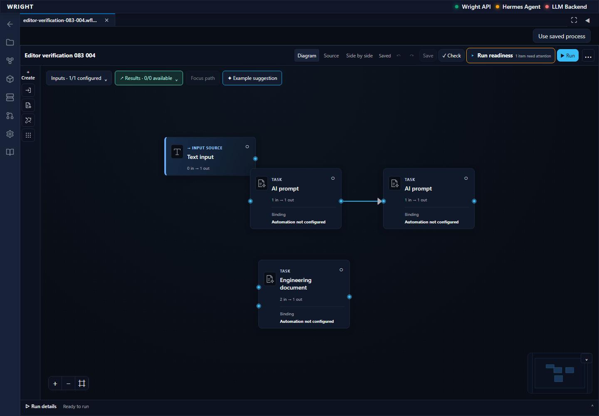
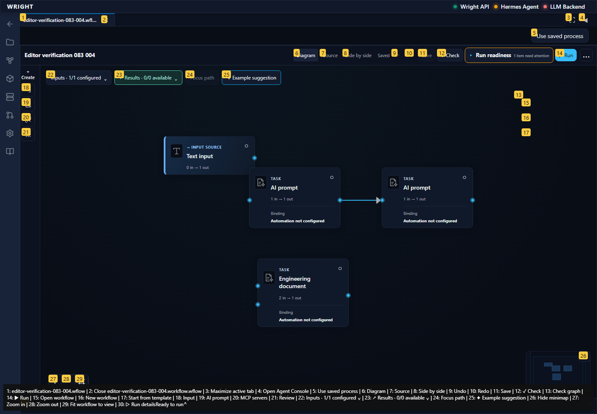
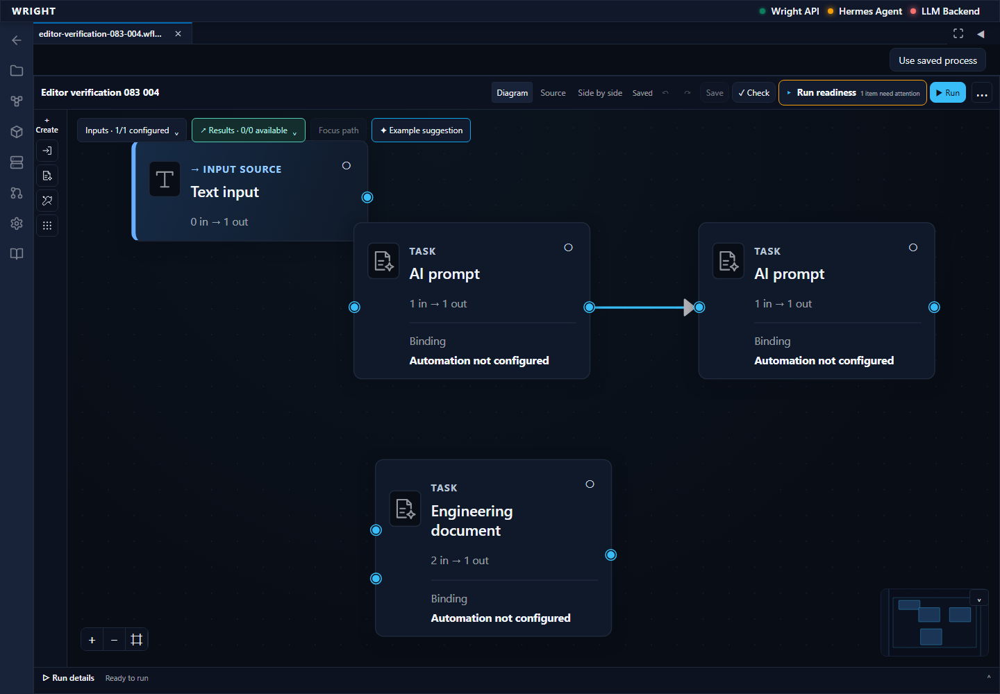
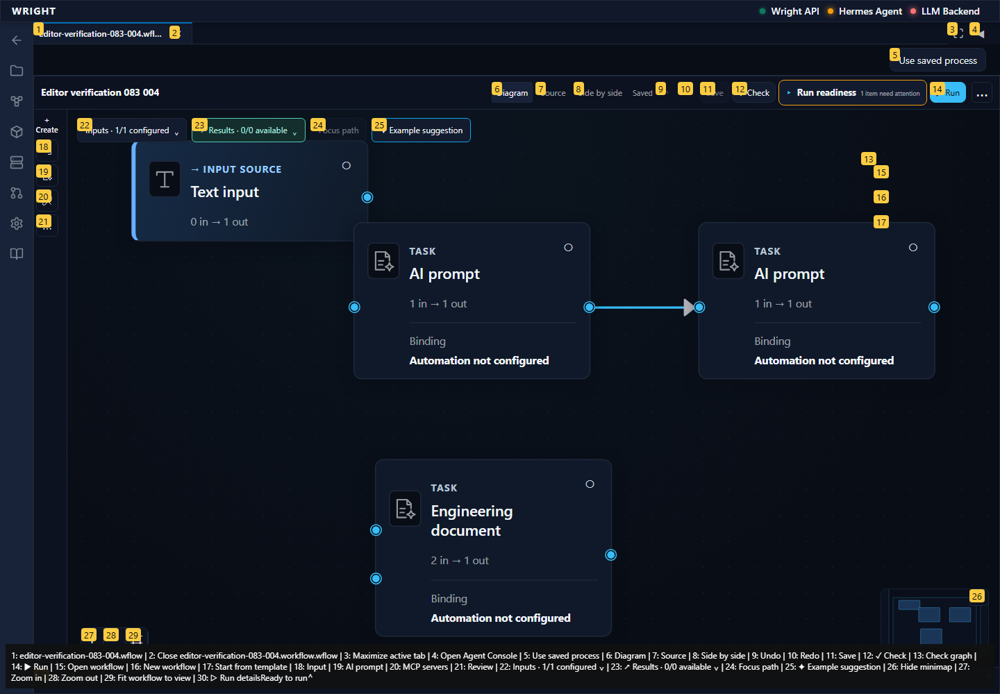
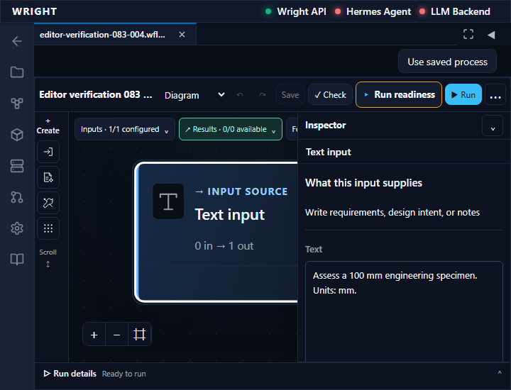
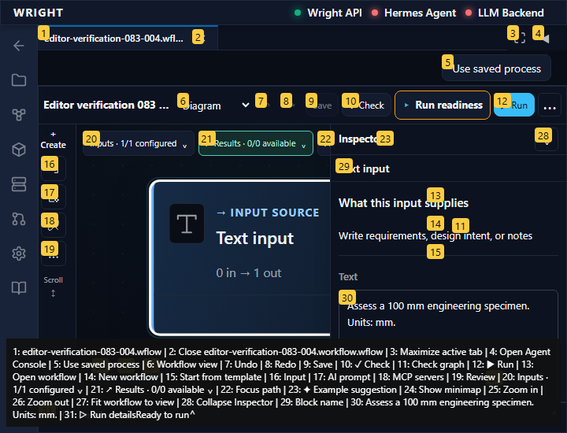

Continue the newly saved scratch workflow through type rejection, layout persistence, zoom and concurrent-save protection. No process execution or engineering review.
Status: blocked
A connection diagnostic is visible and the semantic digest is unchanged.
Expected: Explain incompatible types without changing the accepted graph.
Actual: A connection diagnostic is visible and the semantic digest is unchanged.
raw 
annotated 
The node moves live; position commits on release and reopens exactly while semantics/revision remain unchanged; the full layout digest includes server revision metadata.
Expected: Movement changes saved layout without changing semantics or definition revision.
Actual: The node moves live; position commits on release and reopens exactly while semantics/revision remain unchanged; the full layout digest includes server revision metadata.
raw 
annotated 
Zoom changes the canvas transform and all three controls remain reachable.
Expected: Canvas navigation controls work within the editor.
Actual: Zoom changes the canvas transform and all three controls remain reachable.
raw 
annotated 
First unexpected state retained; no execution or review submitted.
Expected: Editor action succeeds without guesses or workarounds.
Actual: expect(locator).toContainText(expected) failed Locator: locator('[data-testid="retained-workspace-workflow-panel"][aria-hidden="false"]').getByTestId('workflow-recovery-inspector') Timeout: 5000ms - Expected substring - 1 + Received string + 7 - Text input + Inspector⌄Input source · supplies text or a fileWhat this input suppliesWrite requirements, design intent, or notesTextAssess a 100 mm engineering specimen. Units: mm.Input schema and defaultsDefine what this process needs before it starts. Values entered in the working view belong to a run.Input declaration (JSON){ + "version": 1, + "value_schema": { + "type": "string" + }, + "required": true + }Use value_schema for the value shape, required for readiness, and optional unit, frame and default fields. Preserve configured option_source bindings when editing.A declared default takes precedence over legacy input text. Wright checks supported schema, provider options and actual values before starting.Apply input declaration Call log: - Expect "to.have.text" with timeout 5000ms - waiting for locator('[data-testid="retained-workspace-workflow-panel"][aria-hidden="false"]').getByTestId('workflow-recovery-inspector') 14 × locator resolved to <aside class="recovery-inspector" data-testid="workflow-recovery-inspector">…</aside> - unexpected value "Inspector⌄Input source · supplies text or a fileWhat this input suppliesWrite requirements, design intent, or notesTextAssess a 100 mm engineering specimen. Units: mm.Input schema and defaultsDefine what this process needs before it starts. Values entered in the working view belong to a run.Input declaration (JSON){ "version": 1, "value_schema": { "type": "string" }, "required": true }Use value_schema for the value shape, required for readiness, and optional unit, frame and default fields. Preserve configured option_source bindings when editing.A declared default takes precedence over legacy input text. Wright checks supported schema, provider options and actual values before starting.Apply input declaration"
raw 
annotated 